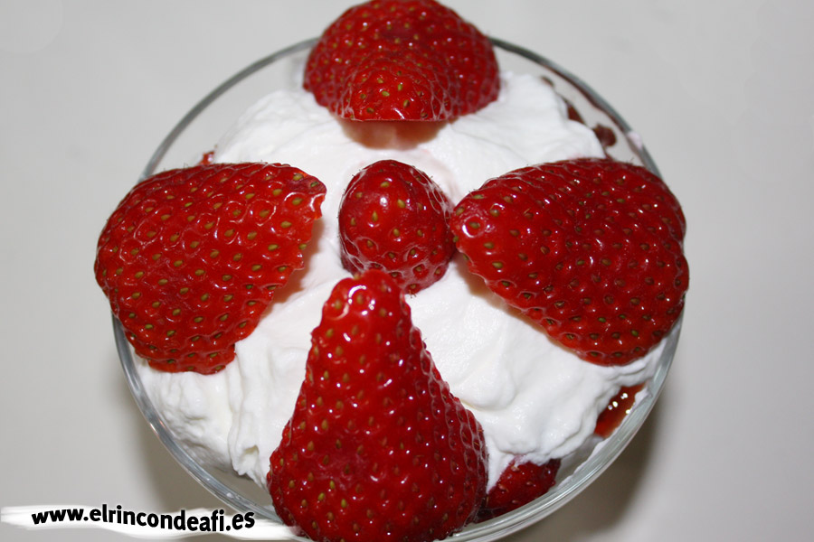

<hr>
<h2>INGREDIENTES:</h2>
<li><strong>10</strong> fresas</li>
<br>
<li>Nata montada</li>
<br>
<hr>
<h2>PREPARACIÓN</h2>
<li>Cortar las fresas a nuestro gusto</li>

<br>
<li>Ponerlas en un bol</li>
<br>
<li>Poner la nata montada y ponerla por encima de las fresas a gusto personal</li> 
<br>
<hr>
<h2>RESULTADO FINAL:</h2>

<br>
<br>
<a href="index.html">--------------------------------------------------------------------------------------------------------------Volver a la página de inicio--------------------------------------------------------------------------------------------------------------</a>